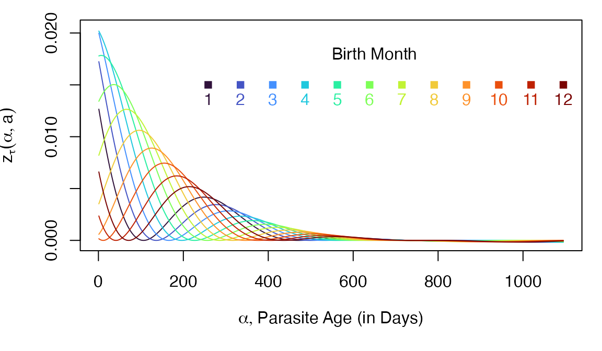

Parasite Infection Dynamics
The Multiplicity and Age of Infection
Dynamics.RmdIn the following, we present functions to compute the distribution of the multiplicity and age of infection.
Introduction
Let \(z_\tau(\alpha,a)\) denote the density function for infections of age \(\alpha\) in a host cohort of age \(a\) born on day \(\tau\). The dynamics of \(z(\alpha,a)\) in a population of humans are described by the following:
\[ \frac{\partial z}{\partial a} + \frac{\partial z}{\partial \alpha} = - r z \]
with the boundary condition:
\[ z_\tau(0,a) = h_\tau(a) \]
We can solve the equation for any particular cohort exactly. Solutions describe the density of infections of age \(\alpha\) in a cohort (born on day \(\tau\)) of age \(a\):
\[\begin{equation} z_\tau(\alpha,a) = h_\tau(a-\alpha) e^{-r \alpha} \tag{1} \end{equation}\]
All solutions to \(z_\tau(\alpha, a)\) thus depend on a function that describes the history of exposure, \(h_\tau(a)\), which we call the force of infection (FoI).
Force of Infection (FoI)
To compute anything, we must first set up a function to describe exposure (see the FoI vignette). We define functions that plot the FoI for a cohort as it ages (in red), but we can also compute the population average FoI (in black). Different cohorts would experience different histories of exposure.

Computing zda
The function pf.memory::zda(alpha, a, FoIpar, ...) uses
the formula in Eq. 1 to compute the density of parasite infections in a
cohort of humans as it ages.
Using zda, we can compute the density of parasites in a
cohort of any age without solving a full system of equations. Given a
function describing the FoI in the population, \(h(t)\), and the cohort birthday, \(\tau.\)
alpha = 60
a = 6*365
zda(60, 6*365, foiP3) ## [1] 0.001601196The following computes the density of infections of every age in a cohort of age 3.
When we plot \(z_\tau(\alpha, a)\), we note that as \(\alpha\) grows larger, the parasite cohort gets older. When we plot parasite cohorts by age, time is going backwards on the x-axis.
Now, we can imagine what zda would look like for several
different host cohorts at age three, but who were born at different
times. In effect, we are taking a snapshot of the cohorts at the same
age, but at different times.
The curves are different because the hosts were born at different months, and they thus experienced different levels of exposure over the first two years of life. Here the annual FoI is 5 infections, per person, per year (\(\bar h = 5/365\)):

Multiplicity of Infection (MoI)
We define a random variable \(M\) describing the multiplicity of infection (MoI). The distribution of the MoI is Poisson (see the MoI vignette).
\[M_\tau(a) \sim f_M(\zeta; a, \tau) = \mbox{Pois}(m_\tau(a))\]
Since \(z_\tau(\alpha, a)\) describes the density of all infections of age \(\alpha\) in a cohort of age \(a\), the density of all infections must be the MoI. Since \(0 \leq \alpha < a\), it must be true that:
\[\begin{equation} \tag{2} m_\tau(a) = \int_0^a z_\tau(\alpha, a) d \alpha \end{equation}\]
The function that computes \(m_\tau(a)\) is called
meanMoI.
mm = meanMoI(a3years, foiP3, hhat=5/365)Here, we plot the average MoI in the host cohort as it ages:

Age of Infection (AoI)
We define a random variable \(A_\tau(a)\) that describes the age of infection (AoI), which is given by the formula
\[ A_\tau(a) \sim f_A(\alpha; a, \tau) = \frac{z_\tau(\alpha,a)}{m_\tau(a)} \]
The Density Function, dAoI
We can compute \(A_\tau(a)\) using
the density function dAoI:

Now, as we plot the distribution of the AoI in cohorts at age two, born at different months (as we did above), we notice that the distributions have changed shapes:

The Distribution Function, pAoI
The distribution function for \(A_\tau(a)\) is:
\[ F_A(a) \sim \int_0^\alpha f_A(\alpha; a, \tau) d\alpha \]
If our functions work correctly, then we should get approximately the
same answer from computing the cumulative sum of dAoI.
F_A_alt = cumsum(f_A)We shouldn’t expect the answers to be exactly the same, but they
should be close, with the pAoI in black.
par(mar = c(5,4,1,1))
plot(a3years, F_A, type = "l",
xlab = "Parasite Cohort Age",
ylab = expression(1-F[X](alpha, a, tau)), lwd=3)
lines(a3years, F_A_alt, col = "red", lwd=2, lty =2)

Random Numbers, rAoI
The function rAoI uses pAoI to generate
random numbers from \(F_A(\alpha)\)
rhx = rAoI(10000, 3*365, foiP3)A simple visual check computes the empirical CDF for the random
variates against \(F_A(\alpha)\)
computed using pAoI
par(mar = c(5,4,1,2))
plot(stats::ecdf(rhx), xlim = c(0,1095), cex=0.2, main = "",
xlab = expression(list(alpha, paste("Parasite Age (in Days)"))),
ylab = expression(list(F[A](alpha), paste("ecdf"))))
lines(a3years, F_A, col = "red", lty = 2, lwd=2)
We can also plot the distribution functions.

Moments of \(A_\tau(a)\)
Let \(x\) denote the first moment of of \(A_\tau(a)\): \[x_\tau(a) = \left< A_\tau(a) \right> = \int_0^\infty \alpha \frac{z_\tau(\alpha, a)} {m_\tau(a)}\]
Similarly, we let \(x_\tau(a)[n]\) denote the higher order moments of \(A_\tau(a)\): \[x_{[n]}(a, \tau) = \int_0^\infty \alpha^n \frac{z_\tau(\alpha, a)} {m_\tau(a)}\]
a3years0 = a3years[-1]
moment1 = momentAoI(a3years0, foiP3)
moment2 = momentAoI(a3years0, foiP3, n=2)
moment3 = momentAoI(a3years0, foiP3, n=3)The first three moments of the AoY plotted over time. In the top plot, we’ve also plotted the \(n^{th}\) root of the \(n^{th}\) moment.

Next:
- In the vignette Multiplicity of Infection: Hybrid Models, Queuing Models, and Verification, we show that the mean MoI computed using the formula in Eq. 2 gives the same answer as other approaches.